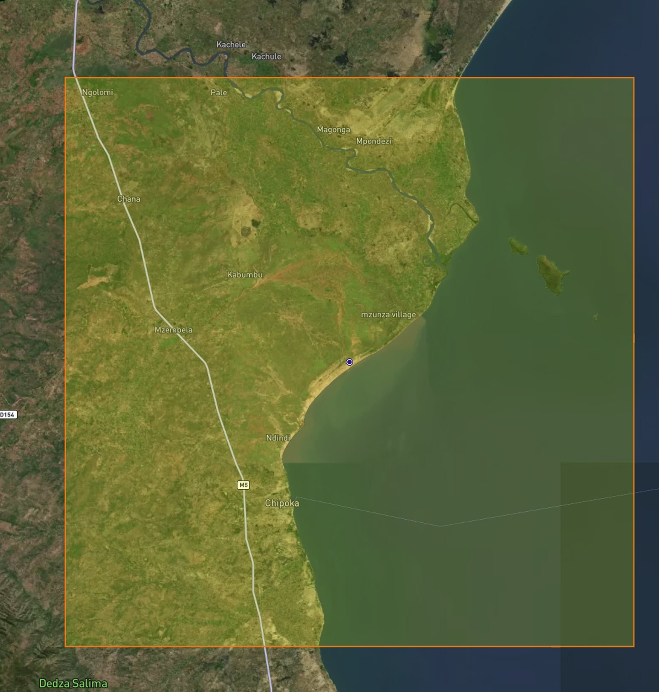
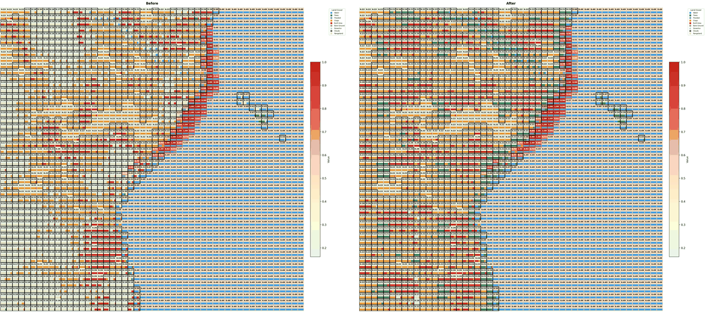
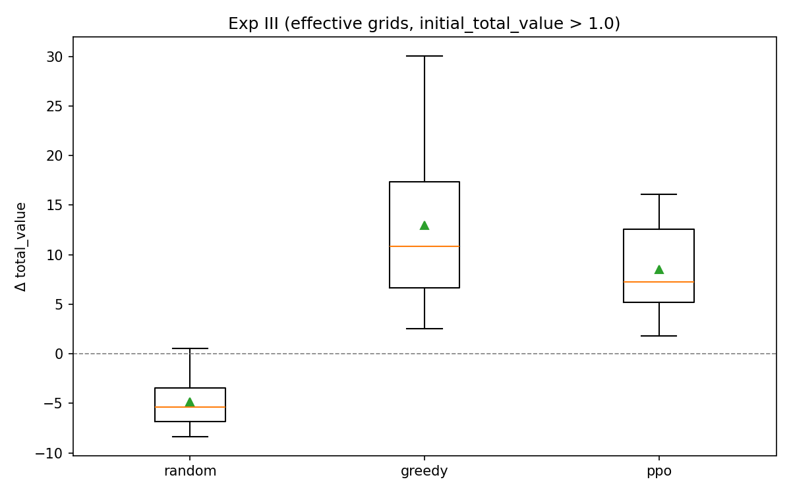
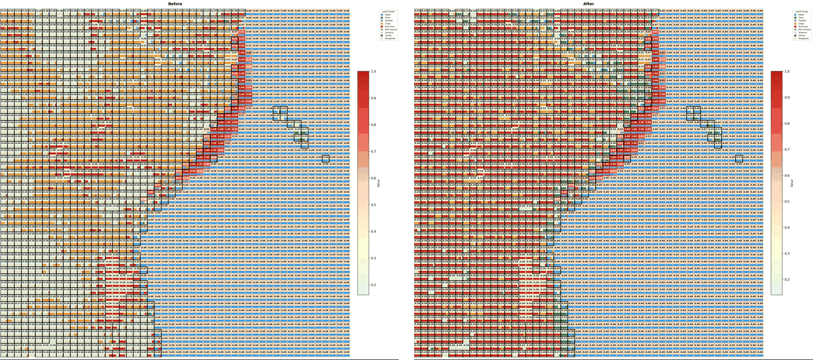

약어와 기호
본문에 쓰이는 약어를 먼저 정리한다. 각 용어는 처음 등장하는 자리에서 다시 풀어 쓰며, 수식 기호의 정의는 「보상함수의 단계적 구성」 절의 변수 목록에서 다룬다.
토지이용 상충과 정량적 판단의 공백
습지를 농경지로 전환하면 식량 생산은 증가하는 반면 홍수 조절과 영양물질 여과 기능은 감소한다. 증가한 편익과 감소한 편익은 측정 단위가 서로 다르고 귀속되는 집단이 상이하며 발현되는 시점 또한 일치하지 않는다. 따라서 토지이용 계획을 수립하려면 이러한 상충을 공통의 척도 위에서 비교해야 하지만, 그 척도를 구성하는 절차는 아직 표준화되어 있지 않다.
공간 배치에서 비롯되는 어려움도 존재한다. 동일한 면적의 산림이라도 분산되어 있을 때와 집단화되어 있을 때 생태적 기능이 달라지기 때문이다. 서식지가 단편화되면 종의 존속 확률이 저하되며(Fahrig, 2003), 수변에 인접한 경작지와 일정 거리를 둔 경작지는 하천 수질에 서로 다른 영향을 미친다(Lowrance et al., 1984). 즉 배분의 가치는 개별 격자 가치의 단순 합으로 환원되지 않으며, 이웃 격자와의 관계가 값의 일부를 구성한다.
말라위호 유역은 두 어려움이 동시에 나타나는 지역이다. 아프리카에서 세 번째로 큰 이 호수에는 1,000종이 넘는 고유 시클리드가 서식하며, 500만 명 이상이 어업과 농업, 용수 공급에 생계를 의존하고 있다. 한편 삼림 벌채와 경작지 확장, 계획되지 않은 도시화가 함께 진행되면서 이러한 생태계서비스의 기반이 잠식되고 있다. 결국 무엇을 어디에 배치할 것인지는 정량적으로 답해야 할 문제이지만, 그 답을 산출하는 절차가 아직 마련되어 있지 않다.
생태계서비스 가치와 편익이전
상충을 비교하려면 공통 단위가 필요하다. 생태계가 인간에게 제공하는 편익은 식량과 담수 같은 공급 서비스, 기후 조절과 수질 정화 같은 조절 서비스, 경관과 여가 같은 문화 서비스로 구분된다. 이들을 화폐 단위로 환산하여 합산하는 회계 방식을 생태계서비스 가치(ecosystem service value, ESV)라 한다.
대상지마다 가치를 새로 추정하는 데에는 상당한 비용이 소요된다. 이에 다른 지역에서 추정된 단위 가치(USD/ha/yr)를 생물군계 유형을 매개로 이전하여 적용하는 편익이전(benefit transfer)이 널리 쓰인다. Costanza 외(2014)가 300건이 넘는 사례연구를 종합하여 제시한 단위 가치표가 사실상의 참조 기준으로 활용되고 있다. 논문은 이 가운데 생물군계 간 비율만을 차용하고, 절대 수준은 말라위 남부 Lake Chiuta 습지를 평가한 현지 연구의 US$554/ha/yr에 맞추어 보정하였다(Zuze, 2013).
표의 값은 USD/ha/yr이며, 정규화는 아홉 개 클래스 전체의 최솟값과 최댓값을 기준으로 수행된다. 따라서 최댓값 1.00은 습지에 부여된다. 에이전트가 실제로 변경할 수 있는 다섯 클래스만을 놓고 보면 순위는 경작지 0.29 > 시가지 0.26 > 나무 0.21 > 초지 0.16 > 나지 0.00으로 정렬된다.
계수는 관측이 아니라 선택이다
경작지 계수 332는 기본값 246에 1.35배를 적용한 값이다. 이 배수는 재생농업 전환을 가정한 정책 시나리오에서 도출된 것으로, 관측을 통해 확인된 값이 아니다. 즉 계수 하나를 조정함으로써 경작지가 나무와 시가지를 모두 상회하게 되며, 격자별 가치만을 기준으로 하면 조림보다 경작이 유리한 구조가 형성된다. 이러한 배열이 어떤 결과를 낳는지는 뒤의 절제 실험(ablation)에서 확인할 수 있다.
격자 기반 정식화와 문제의 난도
대상지는 말라위호 서안의 25 × 25 km 구역이다(위도 −13.9346°, 경도 34.5429°). 토지피복은 ESA WorldCover 2024년 10 m 자료를 사용하되, 10 × 10 화소마다 최빈 클래스를 취하여 100 m로 낮추고, 다시 5 × 5 화소를 하나의 셀로 묶어 500 m 해상도의 50 × 50 격자를 구성한다. 각 셀은 클래스별 화소 수를 담은 아홉 개 차원의 벡터로 표현되며, 이것이 곧 해당 셀의 토지이용 구성비에 해당한다.

초기 구성은 물 45.2%, 경작지 24.5%, 초지 19.7%, 시가지 7.9%, 습지 2.4%, 나무 0.3%, 나지 0.1%이다. 이 가운데 물, 습지, 눈얼음, 구름 네 클래스는 보호 대상으로 지정되어 에이전트가 관측하거나 변경할 수 없으며, 나머지 다섯(나무, 경작지, 시가지, 나지, 초지)이 관측과 행동의 범위를 구성한다.
문제의 난도는 여기에서 발생한다. 한 셀의 최선 선택이 이웃 셀의 상태에 의존하므로, 격자마다 독립적으로 가치가 가장 높은 클래스를 선택하는 방식으로는 연결성과 수변 완충이 확보되지 않는다. 즉 배치를 동시에 결정해야 하는데, 그 조합의 수가 직접 탐색할 수 있는 규모를 넘어선다. 학습에 사용되는 10 × 10 셀 부분격자만 보더라도 한 번의 행동이 (셀, 원천 클래스, 목표 클래스)의 조합으로 정의되므로 매 스텝 2,500가지 선택지가 발생하며, 한 에피소드는 최대 500스텝까지 진행된다.
상태가 존재하고 행동이 상태를 변화시키며 성과가 누적된 결과로만 평가되는 구조는 강화학습(reinforcement learning, RL)이 다루는 전형적인 문제 형태이다. 강화학습은 정답이 표시된 자료로 입력과 출력의 대응을 학습하는 지도학습(supervised learning)과 달리, 어떤 배분이 옳은지를 미리 알려 주는 정답 지도가 없는 상황에서 시행착오를 통해 행동 규칙을 찾는다. 토지이용 배분에는 비교 대상이 될 정답 지도가 존재하지 않으므로 이 계열이 선택된다.
강화학습의 구성은 다섯 가지 요소로 정리된다. 의사결정 주체인 에이전트(agent)가 환경(environment)의 현재 상태(state)를 관측하고 행동(action)을 선택하면, 환경은 상태를 갱신하고 보상(reward)을 돌려준다. 이 과정을 종료 조건까지 반복한 한 회분을 에피소드(episode)라 하며, 상태를 행동에 대응시키는 규칙을 정책(policy)이라 한다. 즉 학습의 목표는 한 번의 보상이 아니라 에피소드 전체에서 누적된 보상을 최대화하는 정책을 찾는 데 있다. 이 연구에서 각 요소가 무엇에 대응하는지는 다음과 같다.
도시계획 분야에서는 이미 동일한 틀이 적용된 바 있다. Zheng 외(2023)는 그래프 신경망과 결합하여 근린 접근성을 최적화하였고, Shen 외(2025)는 항저우 격자를 대상으로 교통 부문 탄소배출을 저감하는 배분을 학습시켰다. 이 논문은 동일한 틀을 도시가 아닌 생태 유역에 적용하고, 목적을 배출 저감에서 ESV 최대화로 전환한 점에서 차이가 있다.
보상함수의 단계적 구성
보상은 상태 가치의 증가분으로 정의된다. 즉 매 스텝의 보상은 행동 전후 총가치의 차이이며, 총가치는 두 부분으로 구분된다.
가장 단순한 형태는 총가치를 셀별 ESV의 합, 곧 Veco 하나로 한정하는 것이다. 그러나 이렇게 구성하면 에이전트는 가치가 낮은 클래스를 가치가 높은 클래스로 계속 전환할 뿐, 그 배치가 어떤 형상을 이루는지는 고려하지 않는다. 이웃 관계가 값을 구성한다는 앞 절의 문제가 그대로 남는 것이다. 두 번째 항 Vspatial이 이 부분을 담당한다.
Vspatial은 세 개의 연결성 점수와 하나의 페널티, 하나의 보너스로 구성된다. 연결성 점수는 특정 클래스가 얼마나 집단화되어 있는지를 측정하며, 각 셀의 해당 클래스 분율에 상하좌우 네 이웃의 같은 클래스 분율 합을 곱하여 전체를 합산하는 방식으로 산출된다. 따라서 같은 클래스가 인접할수록 값이 커진다.
로그를 적용한 이유는 신호의 균형에 있다. 이 곱의 합은 집단 크기에 대해 대략 제곱으로 증가하므로, 그대로 두면 이미 규모가 큰 패치 하나가 보상 전체를 지배하고 나머지 항이 묻히게 된다. ln(1 + ·)은 이 범위를 압축함으로써 항 사이의 균형을 유지한다. 아래 그림에서 동일한 개수의 셀을 분산 배치한 경우와 집단 배치한 경우의 점수 차이를 확인할 수 있다.
수변 처리는 두 개의 항으로 나뉜다. 페널티 PW는 물에 인접한 셀의 경작지와 시가지 분율을 같은 방식으로 합산하여 차감하며, 보너스 BR은 부호를 반대로 하여 수변에 나무가 배치된 경우 이를 가산한다. 즉 앞의 항은 위반을 억제하는 방향으로, 뒤의 항은 복원을 유인하는 방향으로 작동한다.
- sc
- 가변 클래스 c가 각 셀에서 차지하는 분율의 10 × 10 지도. 다섯 장을 겹친 것이 곧 관측이다.
- ẽ
- 정규화된 ESV 계수. Veco는 모든 셀·클래스에 대한 s · ẽ의 합이다.
- K
- 4근방 커널. 상하좌우 네 칸만 1인 3 × 3 행렬이고, ∗는 경계를 0으로 채운 2차원 합성곱이다.
- w
- 보호 수역의 분율 지도. 관측에서는 빠지지만 페널티와 보너스 계산에는 계속 쓰인다.
- Σ
- 격자의 모든 셀에 대한 합. 곱은 셀별로 계산한 뒤 더한다.
가중치는 아래와 같이 고정된다. 다만 수변 페널티 가중치는 학습 초반 60% 구간에서 1에서 6으로 선형 증가시키는데, 이는 정책이 이득이 되는 전환을 먼저 학습하도록 한 뒤 제약을 단계적으로 강화하기 위한 설계이다.
금지는 마스크로, 선호는 보상으로
물에 인접한 셀에 경작지나 시가지를 새로 배치하는 행동은 애초에 선택지에서 제외된다. 매 스텝 2,500개 조합마다 실행 가능 여부와 수변 규칙을 함께 판정하는 불리언 마스크를 생성하고, 정책은 그 위에서만 확률을 배분하기 때문이다(Huang & Ontañón, 2022). 위반을 벌점으로만 다룰 경우 정책이 비용을 감수하고 위반을 선택할 수 있으나, 마스크로 다루면 해당 선택지 자체가 존재하지 않는다. 법정 규제와 정책적 선호를 동일한 층위에서 처리하지 않는다는 점에서, 계획 도구로 이전할 때 그대로 적용할 만한 구분이다.
다만 마스크는 새로운 위반을 차단할 뿐 기존 위반을 되돌리지는 못한다. 수변에서 벗어나는 방향의 전환, 이를테면 시가지를 나무로 되돌리는 행동은 계속 허용되며, 실제 복원을 유인하는 역할은 페널티와 수변 조림 보너스가 담당한다.
학습 알고리즘으로는 근위 정책 최적화(Proximal Policy Optimization, PPO)를 사용한다. PPO는 정책을 직접 매개변수화하여 갱신하는 정책 경사(policy gradient) 계열의 방법으로, 한 번의 갱신에서 정책이 직전 정책으로부터 지나치게 멀어지지 않도록 변화 폭을 제한하는 점이 특징이다. 이 제한이 없으면 큰 갱신 한 번으로 정책이 무너져 학습이 회복되지 않는데, PPO는 갱신 비율을 일정 구간으로 잘라 냄으로써 이를 방지한다(Schulman et al., 2017). 본 연구가 사용한 MaskablePPO는 여기에 앞의 행동 마스크를 결합한 변형으로, 마스크가 배제한 행동에는 확률이 배분되지 않도록 정책 분포를 제한한다(Huang & Ontañón, 2022; Raffin et al., 2021).
신경망은 5채널 10 × 10 관측을 두 층의 합성곱 신경망(convolutional neural network, CNN)으로 처리한다. 첫 층의 3 × 3 수용영역은 연결성 계산에 사용된 4근방 커널과 구조적으로 대응하도록 설계되었으며, 스트라이드 2인 둘째 층은 격자를 5 × 5로 축소하면서 여러 셀에 걸친 군집 패턴을 포착한다. 이렇게 얻은 128차원 특징은 행동 확률을 산출하는 행위자(actor) 부분과 상태 가치를 추정하는 비평자(critic) 부분이 공유하며, 전체 학습은 150만 스텝에 걸쳐 수행되었다.
증발산(evapotranspiration, ET)은 보상에 포함되지 않고 종료 조건으로만 활용된다. MODIS MOD16A3GF 2024년 자료에서 클래스별 연간 증발산을 산정한 뒤, 배분 변경으로 총 증발산이 허용 범위를 넘어 감소하면 에피소드를 종료하는 방식이다. 클래스별로는 나무가 933.6 kg/m²/yr로 가장 높고 나지가 591.5로 가장 낮다. 물순환을 크게 훼손하는 해를 배제하기 위한 장치이나, 기본 설정의 허용 감소폭이 100%로 지정되어 있어 실질적인 구속력은 확보되지 않는다.
학습된 정책의 배분 결과
학습된 정책을 원래 격자에 복원하면 세 가지 움직임이 중첩되어 나타난다. 경작지는 초지와 나지를 흡수하면서 24.5%에서 30.7%로 증가하고, 나무와 시가지는 분산되지 않은 채 집단 단위로 확장된다(각각 0.3%→7.8%, 7.9%→13.6%). 한편 수변에서는 기존의 시가지와 경작지가 나무로 전환되는데, 마스크가 새로운 침범을 차단하는 동안 페널티와 조림 보너스가 잔존 위반을 제거한 결과이다. 그 대가로 초지는 19.7%에서 0.3%까지 감소하여 사실상 소멸한다.

이러한 행태가 보상 척도의 인공물이 아니라 수렴의 결과임은 학습 곡선에서 확인된다. 평균 에피소드 보상은 초반 5천 스텝에서 급격히 상승한 뒤 13–16 구간에서 안정되며, 에피소드 길이는 학습 전 구간에 걸쳐 상한인 500에 머문다. 즉 마스크가 매 스텝 개선 가능한 행동을 지속적으로 제공하였고, 에이전트가 주어진 스텝을 끝까지 사용하였음을 의미한다.
공간 보상을 항별로 분해하면 실제로 작동한 항을 식별할 수 있다. 나무와 시가지 연결성은 꾸준히 상승하며, 경작지 연결성은 희소한 출발점으로 인해 0 근처에서 약한 양의 방향으로 이동한다. 한편 수변 페널티는 가중치가 1에서 6으로 상향되는 동안에도 0 근처에 머무는데, 새로운 위반이 마스크로 차단된 상태에서 기존 위반을 제거하는 만큼만 미세한 음의 값이 남기 때문이다. 따라서 공간 성형을 실제로 주도한 항은 나무와 시가지 연결성, 그리고 수변 조림 보너스로 판단된다.
비교 기준으로는 두 가지가 설정되었다. 하나는 유효한 행동 가운데 균등하게 표본을 추출하는 무작위 정책이며, 다른 하나는 한 스텝 앞을 모두 시뮬레이션하여 가장 큰 값을 선택하는 탐욕(greedy) 오라클이다. 세 방법은 행동 공간과 마스크, 가치 계산을 공유한다. 증강된 시험 표본 48개 가운데 절반은 보호 클래스가 대부분이어서 구조적으로 개선 여지가 없으므로 제외하고, 남은 24개 격자를 대상으로 비교한다.

보상 정의에 따른 계획안의 변화
이 연구에서 가장 많은 것을 시사하는 부분은 본문이 아니라 부록의 절제 실험(ablation)이다. 알고리즘과 자료, 마스크, 신경망을 동일하게 유지한 채 보상 정의만을 변경한 세 차례의 학습이 서로 다른 계획안을 산출하기 때문이다.
생태 가치만 반영한 경우
공간 항을 0으로 설정하면 시가지가 7.9%에서 38.4%까지 확대된다. 반면 경작지는 16.4%p 감소하고 나무는 3.4%에 그친다. 수변 마스크가 그대로 작동하는 조건에서도 결과는 난개발에 가깝다.
공간 항을 추가하고 계수는 유지한 경우
상향을 적용하지 않은 기본 경작지 계수에서는 나무가 9.5%까지 증가하고 시가지는 17.0%에서 억제된다. 경작지는 25.5%로 거의 변화가 없다. 즉 공간 성형만으로도 개발이 억제되고 수변이 정비된다.
공간 항과 계수 상향을 함께 적용한 경우
본문 설정에 해당한다. 나무 7.8%, 경작지 30.7%, 시가지 13.6%로, 계수 하나를 상향한 것만으로 전환의 목적지가 시가지에서 경작지로 이동한다.

두 축은 서로 다른 기능을 수행한다. 공간 항은 개발이 분산되지 않도록 집단화하고 수변을 정비하며 시가지 팽창을 억제한다. 한편 재생농업 계수는 그렇게 억제된 전환이 어디로 향할지를 결정한다. 따라서 결과를 설명할 때에는 알고리즘이 무엇을 학습하였는지보다 목적함수에 무엇이 규정되어 있었는지를 검토하는 편이 유효하다.
도구가 내놓는 것은 최적 계획이 아니다
이 프레임워크가 산출하는 것은 명시된 목적함수에 대한 근사 최적해이며, 그 목적함수는 분석자가 작성한다. 계수 하나와 항 하나의 유무에 따라 시가지 비율이 13.6%와 38.4% 사이에서 갈렸다는 사실은, 결과 지도를 해석할 때 반드시 함께 고려되어야 한다.
성능 격차와 남은 제약
저자가 먼저 인정하는 한계는 성능이다. PPO는 탐욕 오라클이 확보한 이득의 약 66%만을 회수하였고, 24개 격자 전부에서 뒤처졌다. 다만 격차가 어느 항에서 발생하는지가 더 중요한데, 최종 생태 가치 자체는 두 방법이 사실상 동일하며(27.59 대 27.66) 차이는 전부 공간 항에서 나타난다.
표에서 앞의 값은 PPO, 뒤의 값은 탐욕 오라클의 결과이다.
저자는 세 가지 원인을 지목한다. 첫째, 관측에는 가변 다섯 클래스만 포함되므로 정책은 물과의 인접성을 직접 관측할 수 없으나 보상은 바로 그 정보로 계산되며, 이는 부분관측(partial observability)에 해당한다. 둘째, 학습 종료 시점에도 정책 경사 손실과 엔트로피에 여지가 남아 완전히 수렴하지 않았다. 셋째, 2,500차원 행동 분포에서 탐색이 충분하지 않았을 가능성이 있다. 나아가 저자는 이를 판별할 실험도 함께 제시한다. 탐욕 궤적으로 행동 복제(behavior cloning) 사전학습을 수행한 뒤 미세조정하였을 때 탐욕을 따라잡는다면 병목은 학습에 있으며, 그렇지 않다면 관측이나 보상 설계에 있다는 것이다.
계획 도구로 이전하는 관점에서는 더 큰 제약이 남는다. 목적함수에 사람이 포함되어 있지 않기 때문이다. 초지가 19.7%에서 0.3%로 감소하는 것은 이 목적함수 안에서 개선으로 계산되지만, 방목에 의존하는 생계에는 손실로 귀결된다. 소유권과 전환 비용, 전환에 소요되는 시간, 분배의 형평 가운데 어느 것도 보상에 반영되어 있지 않다.
가치 체계 자체의 불확실성도 크다. 절대 수준은 석사학위 논문 한 편의 습지 평가액에 고정되어 있고(Zuze, 2013), 생물군계 간 비율은 전 지구 평균 단위 가치에서 이전되었다. 편익이전은 원 연구지와 대상지의 조건 차이만큼 오차를 수반하며, 여기에 정책 가정인 1.35배 상향이 더해진다. 앞서 지적하였듯 증발산 제약 또한 허용 감소폭 설정으로 인해 명칭에 상응하는 구속력을 갖지 못한다.
대상지 역시 하나에 그친다. 25 × 25 km 한 구역에서 확인된 행태가 다른 토지피복 구성에서도 유지되는지는 검증되지 않았으며, ESV 계수를 변경할 때 공간 가중치를 함께 재보정해야 하는지도 여전히 열려 있는 문제이다.
시나리오 분석 도구로서의 활용
논문 자체의 자리매김은 절제되어 있다. 최적 계획의 산출기가 아니라 시나리오 분석 도구(scenario-analysis tool)로 활용하라는 것이다. 즉 결과 지도를 정답으로 해석하는 대신, 가정을 변경하였을 때 지도가 어느 방향으로 얼마나 이동하는지를 읽는 용법이다. 이러한 용법에서는 탐욕 오라클에 뒤진다는 사실이 결정적인 결함으로 작용하지 않는데, 세 시나리오 사이의 격차가 알고리즘 성능 격차보다 훨씬 크기 때문이다.
국내 맥락으로 이전할 경우 생태계서비스 계수를 국내 평가 연구에 맞추어 재보정하는 작업이 선행되어야 한다. 또한 법정 보호구역과 정책적 선호를 각각 마스크와 보상항으로 분리하는 설계도 초기에 확정할 필요가 있다. 한편 생계나 형평 같은 항목을 목적함수에 포함할 것인지, 아니면 외부의 검토 절차로 남길 것인지는 판단이 갈릴 수 있으나, 어느 쪽을 선택하든 그 결정 자체가 계획안의 성격을 규정한다.
기술적으로 남은 개선 과제는 비교적 명확하다. 관측에 수변 인접성 채널을 노출하는 것이 우선이며, 탐욕 궤적으로 사전학습한 뒤 미세조정하는 실험이 뒤따른다. 대상지를 여러 유역으로 확대하는 작업은 그 이후의 과제이다. 다만 이러한 성능 개선이 앞 절에서 지적한 제약을 해소하지는 못한다. 보상함수에 규정되지 않은 것은 계획안에도 반영되지 않기 때문이다.